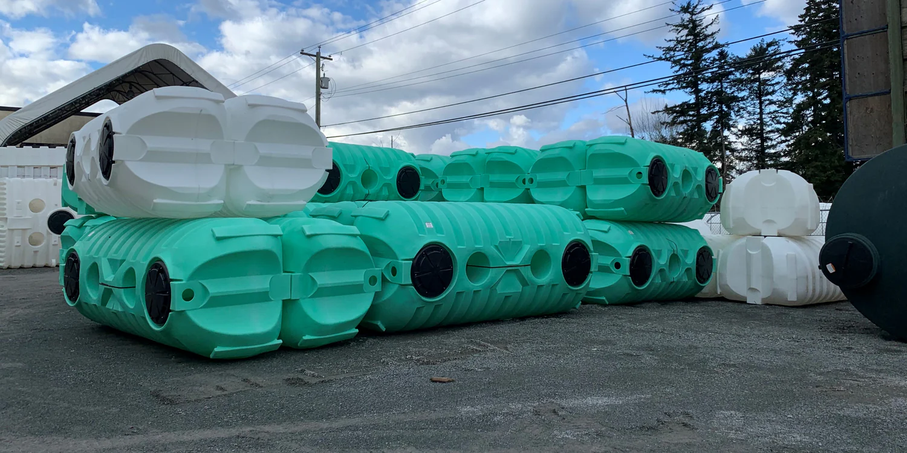
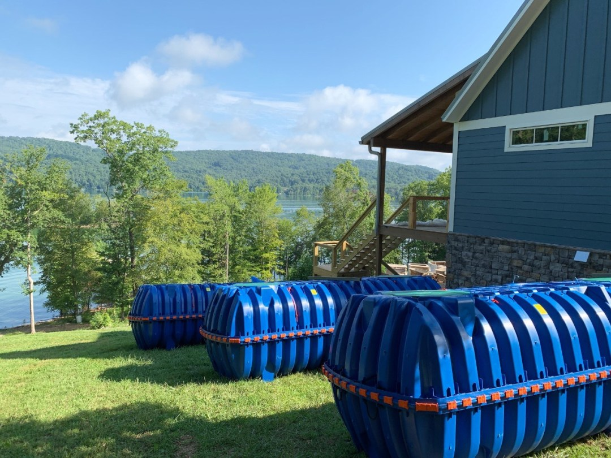

BARR PLASTIC

Barr Plastics is a company specializing in rainwater harvesting systems and solutions. They focus on designing and implementing efficient rainwater collection, storage, and distribution systems for residential, commercial, and industrial applications. Barr Plastics' systems aim to reduce water consumption from municipal sources, promote sustainability, and provide reliable water supply options. Their technology includes advanced filtration, storage tanks, and distribution systems to ensure the harvested rainwater is clean and safe for various uses. Barr Plastics emphasizes the importance of water conservation and offers tailored solutions to meet specific client needs.
Barr Plastic rainwater harvesting refers to a sustainable method of collecting and storing rainwater using plastic materials, such as tanks, barrels, and other containers. This system is designed to capture rainwater from rooftops or other surfaces, funneling it into storage units for later use. The collected water can be used for various purposes, including irrigation, cleaning, and even drinking, provided it is properly filtered and treated. Barr Plastic systems are cost-effective, lightweight, and easy to install, making them popular for both urban and rural settings. They help reduce dependence on municipal water supplies and mitigate the impacts of water scarcity. Moreover, these systems contribute to the conservation of water resources and the reduction of runoff, which can cause erosion and pollution. The use of plastic materials ensures durability, as they are resistant to corrosion and weathering. Barr Plastic rainwater
Barr Plastics is a company that offers a wide range of products for water management,
including those specifically designed for rainwater harvesting. Their products are crucial for making rainwater collection, storage, and usage safe and efficient. Below are more details on what they offer:
Key Products by Barr Plastics:
Barr Plastics manufactures various products made from durable plastic materials, often for rainwater harvesting systems, water filtration, irrigation, and drainage solutions. These products can include:
- Rainwater Harvesting Tanks
Barr Plastics provides rainwater storage tanks that come in various sizes and materials. These tanks are designed to hold collected rainwater for later use, such as for irrigation, flushing toilets, or even potable water (if properly filtered). The tanks are made from durable plastics such as polyethylene, which is resistant to UV degradation and can withstand harsh weather conditions. They offer both above-ground and underground tanks, allowing for flexibility in installation.

- Filtration Systems
Filtration systems are essential devices used to remove impurities or contaminants from liquids, gases, or solids, ensuring that the output is clean and safe for use. These systems operate through various mechanisms such as physical straining, chemical absorption, or biological processes. Common types of filtration systems include air purifiers, water filters, and industrial filters for process liquids. They are crucial in a range of applications, from ensuring safe drinking water and breathable air to enhancing the quality of products in manufacturing industries. Filtration can be achieved through different materials like activated carbon, ceramic, and membrane filters. Regular maintenance of these systems is vital to ensure their efficiency and longevity. In environmental and health-related sectors, effective filtration plays a critical role in reducing pollutants and toxins. Moreover, technological advancements continue to improve the effectiveness of filtration systems, making them more energy-efficient and capable of handling a broader range of contaminants.Barr Plastics offers various filtration systems to ensure the collected rainwater is clean and safe for use. These systems can include pre-filters, sediment filters, and UV sterilizers. The filters help remove debris, sediment, and contaminants from the water before it enters the storage tank or is used for irrigation or other purposes.
- Pre-filtration Systems
Barr Plastics offers pre-filtration systems to remove debris (like leaves, dirt, and organic matter) before the rainwater enters the storage tank. These systems often include first flush diverters, which direct the initial dirty runoff away from the storage system, ensuring cleaner water for storage. The filters help maintain water quality and prevent clogging in storage tanks.
- Benefits of Using Barr Plastics Products in Rainwater Harvesting:
- Durability: The plastics used are designed to last for many years, resistant to cracking, UV damage, and corrosion.
- Sustainability: Using rainwater harvesting products from Barr Plastics allows homeowners or businesses to reduce their dependency on municipal water systems, contributing to sustainability and water conservation efforts.
- Cost-Effective: By harvesting rainwater, you can lower water bills, especially in areas where water costs are high or during drought conditions.
- Environmental Impact: Rainwater harvesting reduces the strain on local water supplies and helps mitigate the risk of flooding by reducing runoff.
- Popular Products:
- Barr Plastics Rainwater Collection System: A complete system that includes everything needed to set up a rainwater harvesting setup: tanks, first flush diverters, filtration units, and distribution pumps.
- Above-ground Rainwater Storage Tanks: Often come in multiple sizes and colors to suit different needs and aesthetic preferences.
- Aquabarrel™: A product line designed for smaller residential uses, such as for gardening or irrigation.